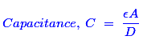
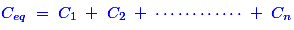
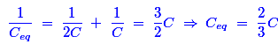
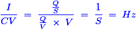
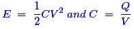
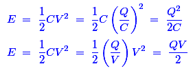

- A capacitor stores 0.24 coulombs at 10 volts. Its capacitance is
- If the sheet of a backelite is inserted between the plates of an air capacitor, the capacitance will
Any electric charge produced by applied voltage and kept in bounds by an insulator (dielectric) that creates a dielectric field. Basically, Bakelite is a dielectric material (or) insulator and it has more dielectric strength than air medium. Due to the presence of this material in between the plates of an air capacitor, this can create the more dielectric field. Hence, the production of electric charge is high and thereby the capacitance value increases.
- The capacitance of a capacitor is not affected by
The capacitance for any pair of separated conductors can be found with the below given expression:

Where, ε – Permittivity of dielectric,
A – Area of the plates,
D – Distance between the plates.
So, the distance and area could affect the changes in the capacitance of a capacitor. Hence, thickness of plate does not affect the capacitance value.
- In a capacitor the electric charge is stored in
In capacitors, the metal plates are used to connect a voltage source in between the dielectric medium. Hence, the electric charge is produced in due to the presence of dielectric medium and it is stored in that dielectric medium itself.
- Three capacitors each of capacity C are given. The resultant capacity (2/3) C can obtained by using them
We know that the capacitance value for parallel connected capacitor is

and for series connected capacitors is

Here, three capacitors have same value. Then, that the capacitance value for two parallel connected capacitor is ( C1+ C2 ) = (C + C ) = 2C. Now, this parallel connected combination is connected with one series connected capacitor. Hence, the final value of capacitance is - The sparking between two electrical contacts can be reduced by inserting a
An arc between two electrodes can be initiated by ionization of atmospheric air. If we connect a capacitor across the contacts of the electrodes, there is a chance to make a short circuit by capacitor. Hence, there is no air gap between contacts and thereby sparking can be reduced.
- In a capacitive circuit
A charging electric current will flow into the capacitor that opposing any changes to the voltage at a rate and it is equal to the rate of change of the electrical charge on the plates. Hence, if voltage increases then according to that voltage, production of electric charge also increases.
- The inverse of capacitance is called
- In a capacitor, the electrcal energy is stored in
- A capacitance is a circuit component that opposes the change in circuit
Under Construction
- Internal heating of a capacitor is usually attributed to
A real capacitor has a leakage resistance internally. It can be said as a large resistance in parallel with capacitor. While the leakage electric current flowing in it, and then I2R loss is produced due to that leakage resistance. Hence, the internal loss happens due to the leakage power loss inside the capacitor.
- A capacitor having a capacitance of 40 μF is connected across 250 V DC source. The charging electric current will be least
Charging in a capacitor that creates a charge imbalance between the two plates and it creates a reverse voltage that stops the charging process. As a result, when a capacitor is charged, electric current stops flowing and it becomes an open circuit. That is why the electric current is least when capacitor is fully charged.
- A variable capacitance is one whose capacitance
There is a knob to change the capacitance value that done by applying the manual mechanical force. A variable capacitor stores the charge in the same fashion like normal capacitor and it can be adjusted as many times as desired to store different amounts of electricity by adjusting the knob.
- If the dielectric of a capacitor is replaced by conducting material
The dielectric material is placed in between the two metal plates. If we replace the dielectric material by a conducting metal, then it leads to make a direct short circuit between the metal plates.
- If C be the capacitance, V be the potential difference and I be the current, then I / CV will have the unit of
We know that one amp is one coulomb per second and one farad is one coulomb per volt. If we apply these units of electric current and capacitance in the given expression, we will get (1/Second).

Hence, the unit of (I/CV) is frequency. - The power dissipated in a pure capacitor is
In the pure capacitor, phase angle between the electric current and voltage is exactly 90°. We know that the expression of power is P = V × I ×cosφ. Here, φ = 90°. Hence, cos90° = 0. So, the power dissipated in a pure capacitor is zero.
- For making a capacitor, it is better to select a dielectric having
In order to maximize the charge that a capacitor can hold, the dielectric material needs to have a high permittivity as possible.
- The capacitance of a parallel plate capacitor can be varied by
The capacitance for any pair of separated conductors can be found with the below given expression:
Where, &epsilon – Permittivity of dielectric,
A – Area of the plates,
D – Distance between the plates.
Hence, all the above parameters can vary the value of capacitance. - The energy stored by a capacitor is given by
We know that the basic expression of energy storage by a capacitor is,

If we apply this relationship in the expression of energy, we can get the following expression related with that expression.

Hence, all of the above expressions are same. - The unit of capacitance is
A farad (F) is the SI derived unit of capacitance. A capacitor of one farad produces a potential difference of one volt between its plates when it stores an electric charge of one coulomb.
Design with  by SARU TECH
by SARU TECH
www.sarutech.com
Content Credited to electrical4u.com
Online Electrical Engineering Study Site